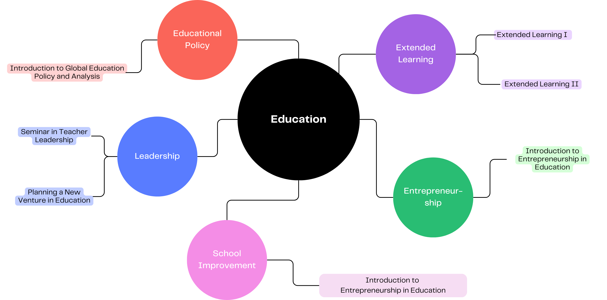

About Me
Hello! My name is Jialing Yang, and I am currently pursuing a Master of Education (M.Ed.) degree at The Johns Hopkins University. I am dedicated to improving the quality of education and helping students achieve their full potential.
Skills
Throughout my studies, I have developed strong skills in various areas:- Proficiency in Microsoft Office Suite (Word, Excel, PowerPoint)
- Proficiency in Blackboard, an educational technology platform
- Strong interpersonal communication skills
- High level of responsibility and commitment to educational excellence
Core Courses
The courses I completed have provided me with advanced skills in educational policy, leadership, technology integration, and extended learning strategies:
